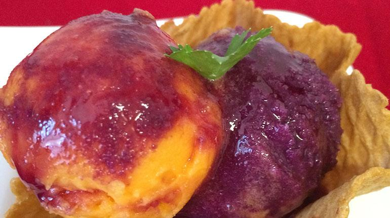
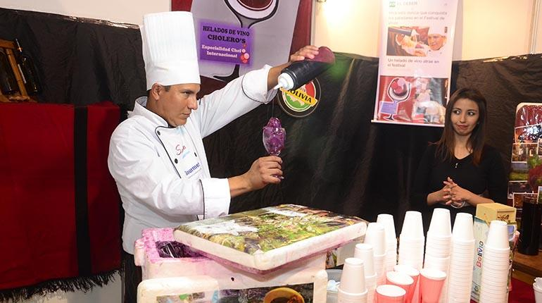

Mi pasión son los sabores y las sonrisas de quienes prueban mi helado. Cada cucharada es una experiencia única que busca deleitar y sorprender.
Descubre los sabores únicos de nuestros helados artesanales de vino.
Haz tu pedidoEn un artículo reciente de Los Tiempos, se destacó nuestra innovadora oferta de helados de vino como una opción única y deliciosa para cualquier celebración. Nuestros helados artesanales, elaborados con técnicas tradicionales y los mejores ingredientes, han capturado la atención de los amantes del vino y los postres por igual.
Óscar Castro, el maestro detrás de estos helados, combina su pasión por el vino y la repostería para crear sabores que sorprenden y deleitan. Cada helado es una obra de arte, cuidadosamente elaborada para resaltar las notas distintivas del vino utilizado.
Ya sea que prefieras el sabor robusto del vino tinto o la frescura del vino blanco, nuestros helados ofrecen una experiencia sensorial inigualable. Perfectos para cualquier ocasión, desde una cena elegante hasta una fiesta casual, nuestros helados de vino son la elección perfecta para impresionar a tus invitados.

Un sabor intenso y sofisticado.

Fresco y afrutado, perfecto para el verano.
En Helados de Vino - Óscar Castro, nuestra pasión es crear helados artesanales de vino que deleiten tus sentidos. Nuestra misión es ofrecer productos de la más alta calidad, utilizando ingredientes naturales y técnicas tradicionales.